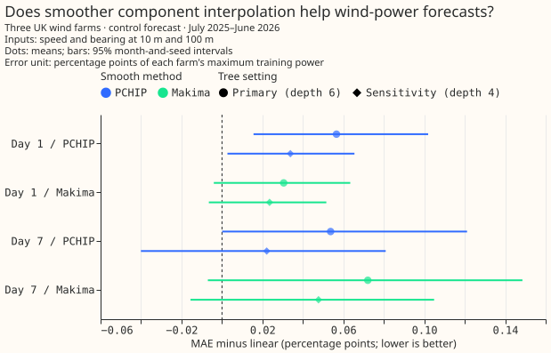
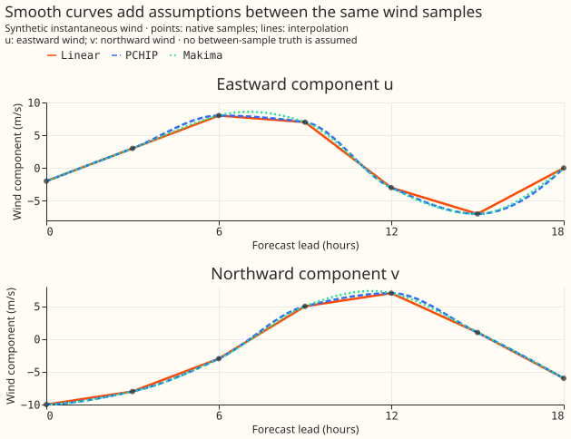
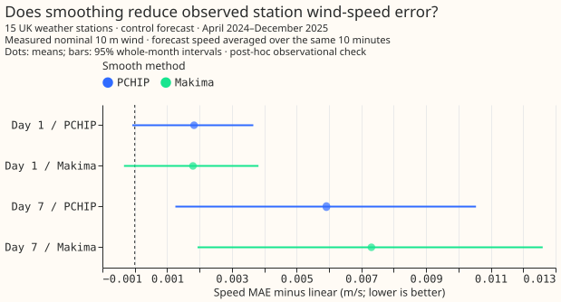

How should we interpolate wind components?
Keep linear interpolation of u/v for now. In this focused test on the three wind farms in National Grid Electricity Distribution's (NGED) dataset, PCHIP and modified Akima produced slightly higher power-forecast error in both lead bands and both XGBoost settings. The small, mostly uncertain differences support retaining linear interpolation for this comparison; the results do not establish that linear interpolation always wins.

Positive differences mean higher mean absolute error (MAE) than linear interpolation. Points pool matched farm/forecast rows. Each setting is fitted with three random seeds. Bars are nominal 95% intervals from resampling whole validation months and selecting one paired random-seed fit. Each farm's error is divided by its maximum cleaned training power. The primary setting uses 500 depth-6 trees; the sensitivity setting uses 1,200 depth-4 trees.
How this page was made. The human maintainer defined the question and four inputs. OpenAI Codex wrote the experiment, figures, and explanation. Independent Codex reviewers checked the code and numerical evidence. The private metered generators are anonymised.
Smoother curves require extra assumptions
Interpolate eastward u and northward v, then derive speed and meteorological bearing. All three methods use exactly the same native forecast samples. Linear interpolation joins each component's samples with straight lines. PCHIP and Makima use neighbouring slopes to form smooth curves. The synthetic illustration has no assumed truth between samples.

PCHIP is a shape-preserving piecewise cubic Hermite interpolating polynomial. Makima is modified Akima interpolation. Smoother component curves alone do not establish more accurate wind or power predictions.
Reconstructing wind and predicting power are different checks
The smooth methods reconstructed hidden native samples slightly better. Removing the 3-hour samples between 6-hour anchors gave average reconstruction errors of 1.174 m/s for linear, 1.158 m/s for PCHIP, and 1.153 m/s for Makima. Each sample's error is the root mean square of the 10 m and 100 m vector-error magnitudes, averaged over samples. The withheld samples are forecast values, not measured wind or half-hourly truth; the exploratory reconstruction check does not establish power skill.
The small reconstruction gain did not translate into lower pooled power error here. With the primary XGBoost setting, linear interpolation's MAE was 8.858 and 17.598 percentage points of training maximum at day 1 and day 7. PCHIP increased linear interpolation's errors by 0.057 and 0.054 points; Makima increased linear interpolation's errors by 0.031 and 0.072 points. The second setting also favoured linear in its pooled point estimates. Individual farms can differ; the result is specific to this comparison.
The direct station check also favours retaining linear interpolation
Measured station winds from the Met Office MIDAS Open archive gave no improvement from smoothing. The post-hoc check used 15 stations' measured nominal 10 m wind speed from April 2024 through December 2025. Linear interpolation's pooled MAE was 1.198 m/s at day 1 and 2.001 m/s at day 7. Smooth methods increased MAE by about 0.002 m/s at day 1, with uncertain differences.

At day 7, PCHIP increased MAE by 0.0059 m/s (95% interval 0.0013–0.0105); Makima increased it by 0.0073 m/s (0.0019–0.0126). The tiny day-seven increases remain statistically significant at the 5% level under the four-comparison correction. The station comparison supports retaining linear interpolation here.
The Met Office guide specifies surface synoptic (SYNOP) wind reports as means from 20 to 10 minutes before each report's timestamp. Forecasts came from each station's containing H3 grid cell. Forecast speed was averaged over the same window with converged numerical integration, then compared on identical station/forecast rows. Whole-month intervals preserve weather shared across stations; stations contribute according to available observations. This exploratory extension fits no models. Nominal measurement height, exposure, and point-to-cell differences remain limitations. The station result does not establish performance for other regions or power-forecast configurations.
What was held fixed
The inputs were wind speed and direction at 10 m and 100 m only, derived after interpolation. Bearings remained in degrees. Each method had a separate XGBoost fit on the graphics processing unit (GPU) for each farm and lead band, with seeds 0, 1, and 2 and both fixed settings. There were no power lags, calendar inputs, solar models, or demand models.
Native samples came from the European Centre for Medium-Range Weather Forecasts (ECMWF) ensemble (ENS) control member 0, component-table snapshot 924. Each complete 00:00 UTC run was interpolated over its full native horizon, without extrapolation. Day 1 covered leads 24–47.5 h at half-hour intervals; day 7 covered 168–191.5 h. There were 51,851 matched validation rows per band, covering July 2025–June 2026. Training began in April 2024 and stopped before 24 June 2025, ahead of the earliest validation initialisation. Cleaned power snapshot 76 provided the targets; zeros were retained. No incomplete site-runs were excluded.
The four planned comparisons were PCHIP and Makima against linear at each lead band, chosen before results existed. Other summaries are exploratory. Intervals cover these farms' weather months and fitting seeds, not variation across a population of farms. The numerical evidence includes all absolute errors, per-farm errors, 95% intervals, and 98.75% intervals correcting the four comparisons within each setting. No smooth-method benefit was supported consistently across settings. This is not a leaderboard submission or a full ensemble test.
Reproduce
The private numerical weather prediction (NWP) and cleaned-power tables are required. The scripts
preserve anonymised inputs, forecasts, losses, gains, and provenance under
data/studies/per_study/wind_interpolation/. Use a fresh output directory for a new run; existing
fits can be resumed only with matching inputs and fitting code/settings. Versions: XGBoost 3.4.1 and
SciPy 1.18.1; fits used the RTX A6000.
uv run python studies/wind_interpolation/wind_interpolation_experiment.py
uv run python studies/wind_interpolation/midas_interpolation_check.py
uv run python studies/wind_interpolation/plot_wind_interpolation_results.py